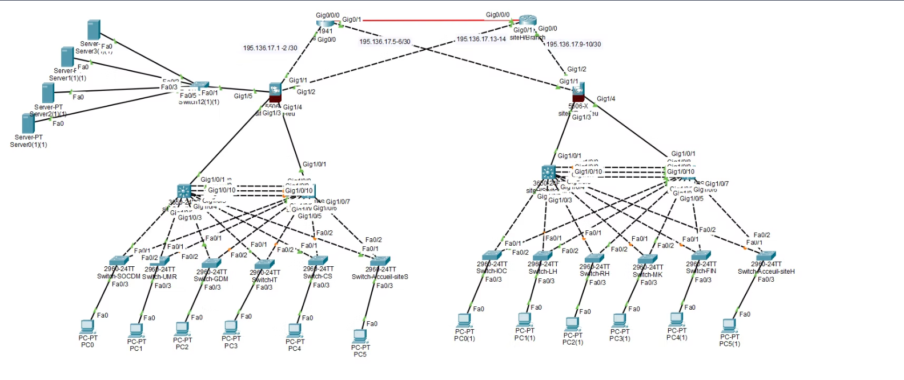

Architecture réseau sécurisée & haute disponibilité

Ce projet consistait à concevoir l'infrastructure réseau complète d'un centre hospitalier réparti sur deux sites géographiques distincts. L'enjeu majeur était de garantir une disponibilité de service critique (24/7) et une sécurité accrue des données patients.
L'architecture repose sur un modèle hiérarchique (Accès, Distribution, Cœur) utilisant des équipements Cisco. Simulation d'interconnexion WAN redondante pour la continuité de service (PRA/PCA).
Séparation logique (Admin, Médical, VoIP) pour optimiser le trafic et la sécurité.
Configuration Layer 3 sur switchs de cœur pour la communication interne rapide.
HSRP/VRRP sur les passerelles pour garantir 100% de disponibilité.
Optimisation des sous-réseaux IP (195.136.17.0/24) pour éviter le gaspillage.
ACLs strictes et Port Security pour empêcher les accès physiques non autorisés.